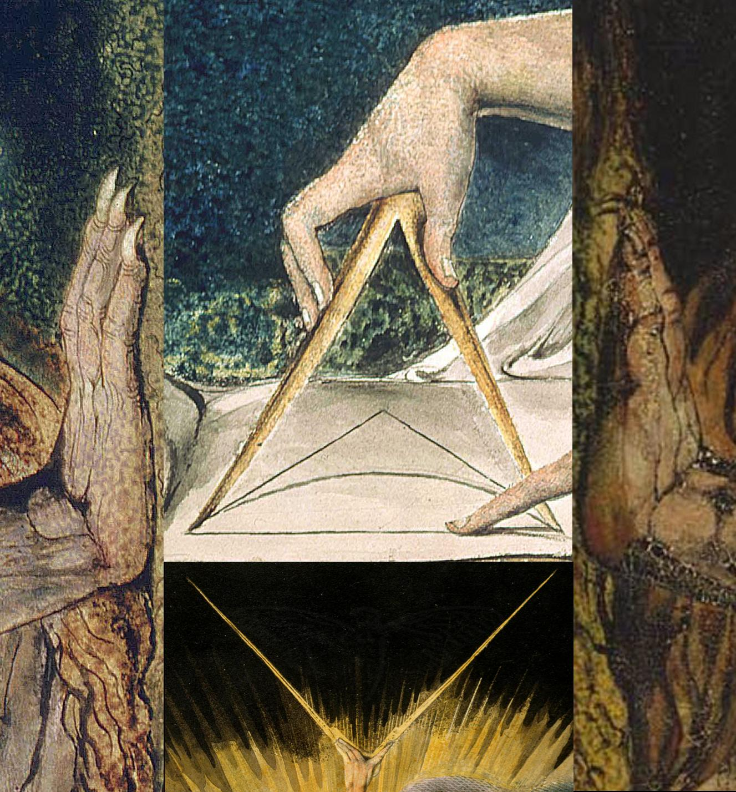

The illustrated cover: compasses and Blake artwork
The 1033.jpg collage, its source artworks, original download, and place in the 2014 puzzle.
On this page
This is the compasses collage often reproduced as the illustrated cover of Liber Primus. Its archived filename is 1033.jpg. It appeared at an earlier stage of the 2014 puzzle, before the manuscript images catalogued here as LP1 and LP2.

1033.jpg. Select the image to inspect it at full size.Download the original JPEG · File provenance and checksum

The artwork in the collage
The image brings together details of William Blake’s works. The repeated compasses are particularly noticeable: the upper panel shows a hand working over a geometrical diagram, while the lower panel shows compasses reaching into darkness.
In his study of the 2014 image, Frank G. Bosman identifies the upper central panel as Newton, the lower central panel as The Ancient of Days, and the two side strips as details of Nebuchadnezzar. These identifications describe the source artworks; they do not by themselves establish what the puzzle authors intended the collage to mean.
For comparison, Tate’s Newton image shows the figure concentrating on a compass and scroll. The British Museum’s catalogue entry for The Ancient of Days describes the figure holding compasses from a heavenly sphere. Cropping and rearrangement matter here: inspect the source compositions before assigning a meaning to a fragment.
Where it appeared in the puzzle
The preceding Self-Reliance book cipher explains how the archived route reached this image.
The archived 2014 walkthrough places this image on the first onion site, auqgnxjtvdbll3pv.onion. The recorded HTML page title is For Every Thing That Lives Is Holy
. This gives the collage another connection to Blake, alongside the closely related sentence in the manuscript’s Welcome section. See William Blake and Liber Primus for the wording in context.
The hidden message, reproduced
On 20 October 2026, default-key OutGuess extraction from this exact JPEG recovered 1,498 bytes. The extracted message begins with a greeting, supplies RSA values e and n, and contains an encrypted block labelled Crypt::RSA::ES::OAEP. The clear-signed message verified with GnuPG 2.5.21 against the recorded Cicada public key, using an isolated keyring and no legacy-digest override.
Download the full extraction · Signed message · Read the message body
The three downloads serve different purposes. The extraction preserves every recovered byte. The signed file isolates the PGP block for verification. The body is a readable derivative with PGP framing and dash escaping removed; use the signed file, not this derivative, to check the signature.
How to reproduce the extraction
Extract the reference-data ZIP and original-images ZIP into the same folder. Install OutGuess separately, then run this command from that folder. The wrapper checks the JPEG before extracting and refuses to overwrite an existing output file.
python scripts/extract_payload.py 1033 --outguess outguess --output illustrated-cover.binIt should report 1,498 verified bytes and this SHA-256:
65ff60bfa019e424ce2ae23994f19af5692f7e12e6bc177830b42a154985defdIf OutGuess is not on your executable search path, replace the second outguess with its full path. See OutGuess extraction for the underlying operation and Running the reproduction scripts for terminal setup.
Next, follow the isolated-keyring instructions to import and check the public key. With that keyring prepared, verify this message:
gpg --no-options --homedir verify-keyring --no-auto-key-retrieve --status-fd 1 --verify exports/steganography/1033.signed.ascThe VALIDSIG line should identify 6D854CD7933322A601C3286D181F01E57A35090F. The evidence record preserves separate hashes, tool identification and the verification status output.
Continue to RSA decryption
Extracting the message does not decrypt the encrypted block. Verifying its signature establishes that the signed text matches the recorded key, not the identity of a person or the authenticity of every pixel in the JPEG. The RSA reproduction guide now recovers the historical next address from all three encrypted blocks, using published factors. It explains the envelope, arithmetic and legacy padding, with a script and recorded outputs.
Why it is separate from page 00
LP1-00 is the plain title page bearing the words Liber Primus
. The collage is a different image from an earlier puzzle stage. It therefore has its own entry rather than taking a numbered place in the 75-image manuscript catalogue.
The three-image hidden-message chain uses LP1-00, LP1-01 and LP1-02. Its name can be confusing: that chain concerns the manuscript’s title pages and warning, not this compasses collage. The title-page guide explains those visible headings and hidden messages.
Check the downloaded file
The download preserves the bytes of the JPEG in the pinned community archive; it has not been resized or re-encoded. It is 1327 × 1427 pixels and 342,361 bytes. Matching this checksum confirms the archived file, not who created it.

SHA-256: 15b2b99fe15ff34ef3eab574bb84bfaad0a119674be2ca5baf65951e6a9bd865The same original is included in the original-images ZIP. Its separate provenance record keeps it distinguishable from the numbered manuscript pages.
Manuscript pages discussed
Guides linking here
- Start solving: a practical introduction
- OutGuess extraction
- Embedded OutGuess payloads
- The cover payload chain
- The two LP1 title pages
- Referenced works and possible influences
- William Blake and The Marriage of Heaven and Hell
- Newton: the upper compasses panel
- Nebuchadnezzar: the cover’s side panels
- The Ancient of Days: the lower compasses panel
- Decrypting the illustrated cover’s RSA message
- Emerson’s Self-Reliance and the opening book cipher
- The 2014 opening image and its hidden message
- Illustrated index: artwork and page features